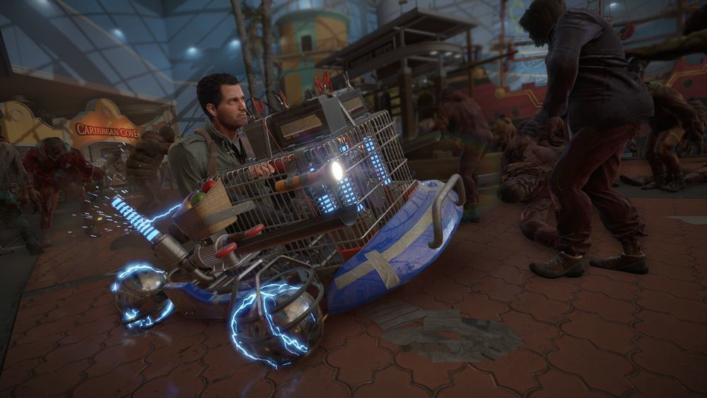
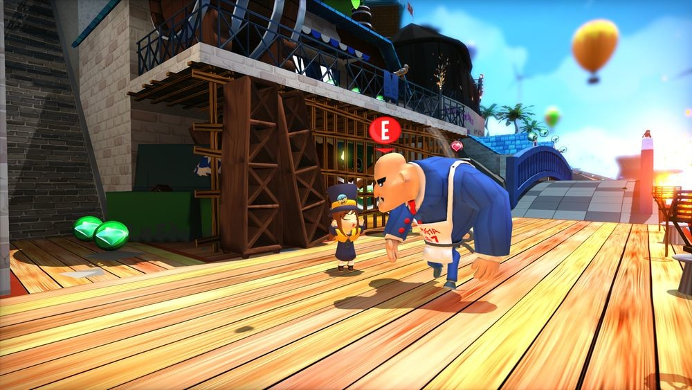

Repasados los lanzamientos de Nintendo Switch y Xbox One de diciembre,
le toca el turno a Sony con su PS4. Un mes más flojo en comparación con
la competencia, en parte porque recibirá viejos
conocidos o tirará de refritos.
Tampoco es que el último mes del año sea, por tradición, un período
especialmente productivo con los lanzamientos, pero puede venir bien para
tomarlo con calma y analizar bien los gastos, sobre todo si se nos ha pasado
alguna joya (ahora rebajada) de meses anteriores...
Frank West quiere cubrir más guerras

Con un año de retraso exacto respecto al original de Xbox One, PS4
va a recibir la próxima semana la versión más completa del nada desdeñable
'Dead Rising 4', donde vimos el regreso de Frank West 16 años después del
suceso en Willamette. Aquí viene de serie todo lo recibido en el pase de
temporada de PC y Xbox One junto con los añadidos que llegaron a posteriori
en forma de parche. Y de paso, también el modo Capcom Heroes,
que llegará a su vez a esos sistemas.
Estos primeros días, poco más que sea verdaderamente destacable: la primera expansión de
'Destiny 2' (La Maldición de Osiris), la colección de 'The Walking Dead' en
formato físico, y la versión para PlayStation VR de 'DOOM'.
Lanzamientos en PS4 del 1 al 5 de diciembre
- DOOM VFR (01/12)
- Bravo Team (05/12)
- Dead Rising 4: Frank's Big Package (05/12)
- Destiny 2: Curse of Osiris (05/12)
- The Surge: A Walk in the Park (05/12)
- The Walking Dead Collection (05/12)
A Hat in Time y su oda a los plataformas de antaño

De 'A Hat in Time' hemos hablado unas cuantas ocasiones alabando su acierto
a la hora de homenajear los clásicos de Nintendo 64. Su recibimiento en Steam
ha sido extremadamente positivo, con el 98% de los análisis favorables.
Y es que si no fuese por el excelente 'Super Mario Odyssey', podríamos
estar hablando, tal vez, del plataformas en 3D del año.
Ahora, por fin, llega a consolas.
Aparte de las remasterizaciones del 'LocoRoco 2' de PSP y del 'Okami'
de PS2 (que ya había recibido una conversión a PS3 con más definición y
compatible con PlayStation Move), tenemos en el último tramo de diciembre
la edición Gold del imprescindible 'Resident Evil 7: Biohazard', esta vez
con todo su contenido de serie y dos más que
llegarán por esas fechas, y el estratégico 'Tiny Metal'.
Lanzamientos en PS4 del 6 al 31 de diciembre
- A Hat in Time (06/12)
- Squareboy vs Bullies: Arena Edition (07/12)
- LocoRoco 2 Remastered (09/12)
- Gang Beasts (12/12)
- Okami HD (12/12)
- Resident Evil 7: Biohazard - Gold Edition (12/12)
- Defunct (19/12)
- Shooty Fruity (19/12)
- Tiny Metal (21/12)